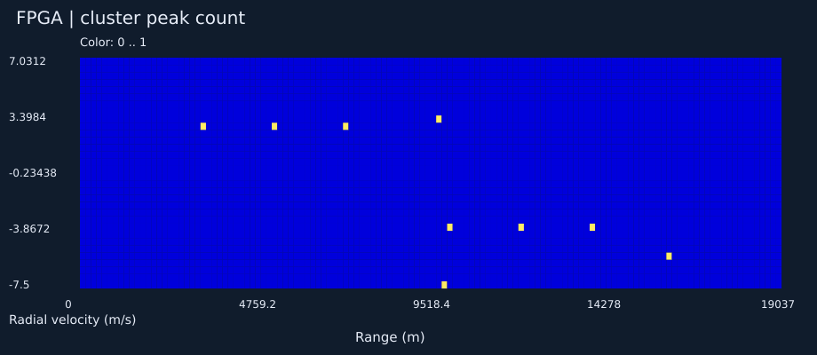
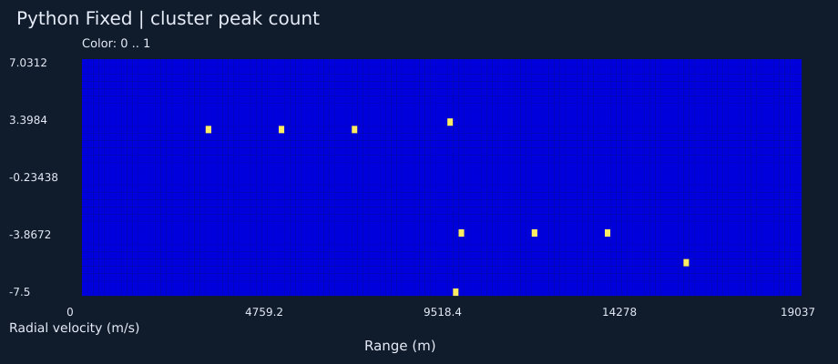
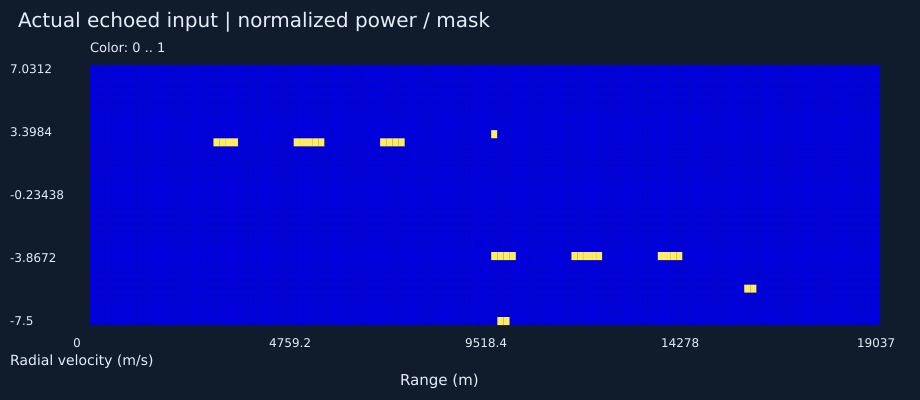

2 هدف از 2 هدف با کلاسترها تطبیق یافت؛ 7 کلاستر بدون تطبیق باقی ماند.



| منبع | شناسه | سلول برد | bin داپلر | سرعت m/s | سلولهای کلاستر |
|---|---|---|---|---|---|
| FPGA | 0 | 22 | 6 | 2.8125 | 4 |
| FPGA | 1 | 35 | 6 | 2.8125 | 5 |
| FPGA | 2 | 48 | 6 | 2.8125 | 4 |
| FPGA | 3 | 65 | 7 | 3.28125 | 1 |
| FPGA | 4 | 66 | 16 | -7.5 | 2 |
| FPGA | 5 | 67 | 24 | -3.75 | 4 |
| FPGA | 6 | 80 | 24 | -3.75 | 5 |
| FPGA | 7 | 93 | 24 | -3.75 | 4 |
| FPGA | 8 | 107 | 20 | -5.625 | 2 |
| Python Float | 0 | 22 | 6 | 2.8125 | 4 |
| Python Float | 1 | 35 | 6 | 2.8125 | 5 |
| Python Float | 2 | 48 | 6 | 2.8125 | 4 |
| Python Float | 3 | 65 | 7 | 3.28125 | 1 |
| Python Float | 4 | 66 | 16 | -7.5 | 2 |
| Python Float | 5 | 67 | 24 | -3.75 | 4 |
| Python Float | 6 | 80 | 24 | -3.75 | 5 |
| Python Float | 7 | 93 | 24 | -3.75 | 4 |
| Python Float | 8 | 107 | 20 | -5.625 | 2 |
| Python Fixed | 0 | 22 | 6 | 2.8125 | 4 |
| Python Fixed | 1 | 35 | 6 | 2.8125 | 5 |
| Python Fixed | 2 | 48 | 6 | 2.8125 | 4 |
| Python Fixed | 3 | 65 | 7 | 3.28125 | 1 |
| Python Fixed | 4 | 66 | 16 | -7.5 | 2 |
| Python Fixed | 5 | 67 | 24 | -3.75 | 4 |
| Python Fixed | 6 | 80 | 24 | -3.75 | 5 |
| Python Fixed | 7 | 93 | 24 | -3.75 | 4 |
| Python Fixed | 8 | 107 | 20 | -5.625 | 2 |
| MATLAB Float | 0 | 22 | 6 | 2.8125 | 4 |
| MATLAB Float | 1 | 35 | 6 | 2.8125 | 5 |
| MATLAB Float | 2 | 48 | 6 | 2.8125 | 4 |
| MATLAB Float | 3 | 65 | 7 | 3.28125 | 1 |
| MATLAB Float | 4 | 66 | 16 | -7.5 | 2 |
| MATLAB Float | 5 | 67 | 24 | -3.75 | 4 |
| MATLAB Float | 6 | 80 | 24 | -3.75 | 5 |
| MATLAB Float | 7 | 93 | 24 | -3.75 | 4 |
| MATLAB Float | 8 | 107 | 20 | -5.625 | 2 |
| MATLAB Fixed | 0 | 22 | 6 | 2.8125 | 4 |
| MATLAB Fixed | 1 | 35 | 6 | 2.8125 | 5 |
| MATLAB Fixed | 2 | 48 | 6 | 2.8125 | 4 |
| MATLAB Fixed | 3 | 65 | 7 | 3.28125 | 1 |
| MATLAB Fixed | 4 | 66 | 16 | -7.5 | 2 |
| MATLAB Fixed | 5 | 67 | 24 | -3.75 | 4 |
| MATLAB Fixed | 6 | 80 | 24 | -3.75 | 5 |
| MATLAB Fixed | 7 | 93 | 24 | -3.75 | 4 |
| MATLAB Fixed | 8 | 107 | 20 | -5.625 | 2 |
| مرجع | معیار | مقدار |
|---|---|---|
| Python Float | hardware_clusters | 9 |
| Python Float | reference_clusters | 9 |
| Python Float | compared_fields | ['record_id', 'range_bin', 'doppler_bin', 'signed_doppler_bin', 'cluster_cells'] |
| Python Float | common_peak_coordinates | 9 |
| Python Float | hardware_only_peaks | [] |
| Python Float | reference_only_peaks | [] |
| Python Float | record_signatures_exact | 1 |
| Python Fixed | hardware_clusters | 9 |
| Python Fixed | reference_clusters | 9 |
| Python Fixed | compared_fields | ['record_id', 'range_bin', 'doppler_bin', 'signed_doppler_bin', 'cluster_cells', 'power_stored_integer', 'tie_flag', 'max_equal_power_cells'] |
| Python Fixed | common_peak_coordinates | 9 |
| Python Fixed | hardware_only_peaks | [] |
| Python Fixed | reference_only_peaks | [] |
| Python Fixed | record_signatures_exact | 1 |
| MATLAB Float | hardware_clusters | 9 |
| MATLAB Float | reference_clusters | 9 |
| MATLAB Float | compared_fields | ['record_id', 'range_bin', 'doppler_bin', 'signed_doppler_bin', 'cluster_cells'] |
| MATLAB Float | common_peak_coordinates | 9 |
| MATLAB Float | hardware_only_peaks | [] |
| MATLAB Float | reference_only_peaks | [] |
| MATLAB Float | record_signatures_exact | 1 |
| MATLAB Fixed | hardware_clusters | 9 |
| MATLAB Fixed | reference_clusters | 9 |
| MATLAB Fixed | compared_fields | ['record_id', 'range_bin', 'doppler_bin', 'signed_doppler_bin', 'cluster_cells', 'power_stored_integer', 'tie_flag', 'max_equal_power_cells'] |
| MATLAB Fixed | common_peak_coordinates | 9 |
| MATLAB Fixed | hardware_only_peaks | [] |
| MATLAB Fixed | reference_only_peaks | [] |
| MATLAB Fixed | record_signatures_exact | 1 |
| مرجع | معیار | مقدار |
|---|---|---|
| Python Float | hardware_clusters | 9 |
| Python Float | reference_clusters | 9 |
| Python Float | compared_fields | ['record_id', 'range_bin', 'doppler_bin', 'signed_doppler_bin', 'cluster_cells'] |
| Python Float | common_peak_coordinates | 9 |
| Python Float | hardware_only_peaks | [] |
| Python Float | reference_only_peaks | [] |
| Python Float | record_signatures_exact | 1 |
| Python Fixed | hardware_clusters | 9 |
| Python Fixed | reference_clusters | 9 |
| Python Fixed | compared_fields | ['record_id', 'range_bin', 'doppler_bin', 'signed_doppler_bin', 'cluster_cells', 'power_stored_integer', 'tie_flag', 'max_equal_power_cells'] |
| Python Fixed | common_peak_coordinates | 9 |
| Python Fixed | hardware_only_peaks | [] |
| Python Fixed | reference_only_peaks | [] |
| Python Fixed | record_signatures_exact | 1 |
| MATLAB Float | hardware_clusters | 9 |
| MATLAB Float | reference_clusters | 9 |
| MATLAB Float | compared_fields | ['record_id', 'range_bin', 'doppler_bin', 'signed_doppler_bin', 'cluster_cells'] |
| MATLAB Float | common_peak_coordinates | 9 |
| MATLAB Float | hardware_only_peaks | [] |
| MATLAB Float | reference_only_peaks | [] |
| MATLAB Float | record_signatures_exact | 1 |
| MATLAB Fixed | hardware_clusters | 9 |
| MATLAB Fixed | reference_clusters | 9 |
| MATLAB Fixed | compared_fields | ['record_id', 'range_bin', 'doppler_bin', 'signed_doppler_bin', 'cluster_cells', 'power_stored_integer', 'tie_flag', 'max_equal_power_cells'] |
| MATLAB Fixed | common_peak_coordinates | 9 |
| MATLAB Fixed | hardware_only_peaks | [] |
| MATLAB Fixed | reference_only_peaks | [] |
| MATLAB Fixed | record_signatures_exact | 1 |